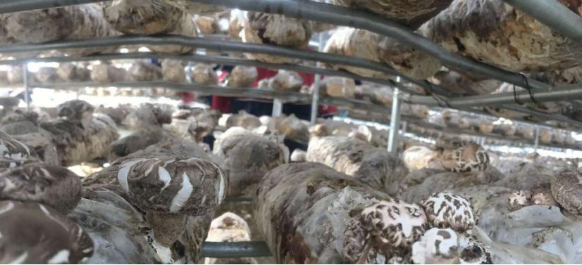
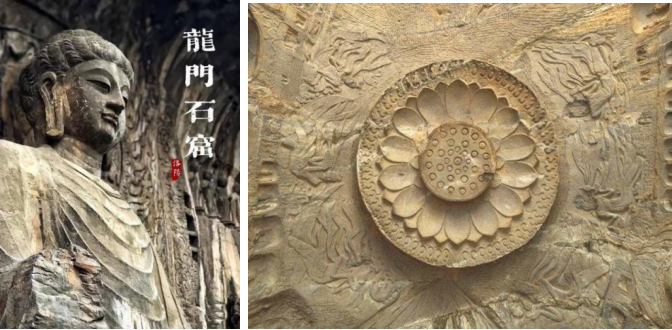
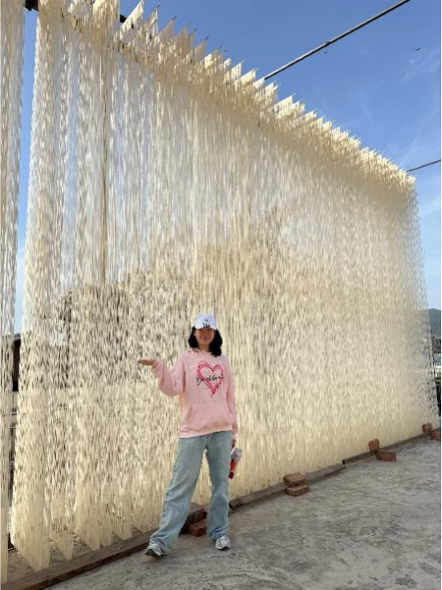
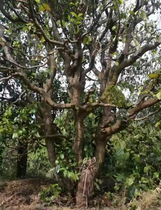

基于田野调查 | 物质流分析 | 文化区位理论 | OpenStreetMap 空间呈现




* 点击任意照片可放大并查看介绍
借鉴泌阳循环模式：将牛粪与水稻秸秆协同处理，生产蘑菇基质，菌糠还田，解决污染与增收。
紧邻景区做流量业态，3-5公里外做精品度假、田园康养，避免同质化竞争。
复制德阳标准化路径：梳理工序标准，开发健康化文创，匠人故事短视频传播。
基于临沧数字建档经验：建立“一树一码”溯源系统，设计研学路线。
《泌阳循环农业优化方案》·《龙门IP转化指南》·《觉慧挂面标准手册》·《白莺山古茶树数字档案》
🔁 四大普适规律：产业融合 | 文化赋能 | 生态优先 | 人才协同